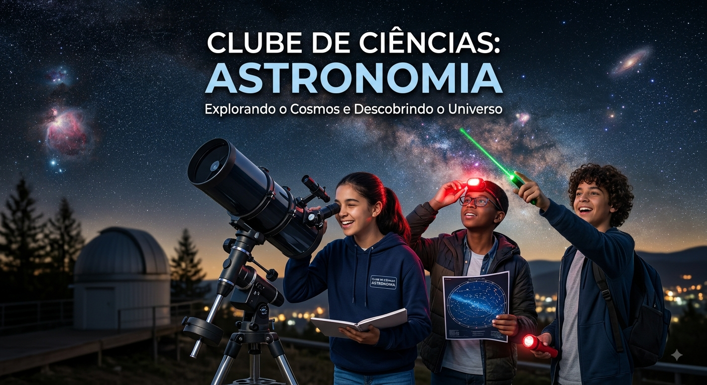

Meu primeiro post.
Sejam bem vindos ao site do Clube de Ciências do Colégio Branca da Mota Fernandes. Aqui irei postar os trabalhos dos estudantes que participam dos encontros.
Por: Flávia Henrique

Venham se apaixonar pela Astronomia.
Sejam bem vindos ao site do Clube de Ciências do Colégio Branca da Mota Fernandes. Aqui irei postar os trabalhos dos estudantes que participam dos encontros.
Por: Flávia Henrique